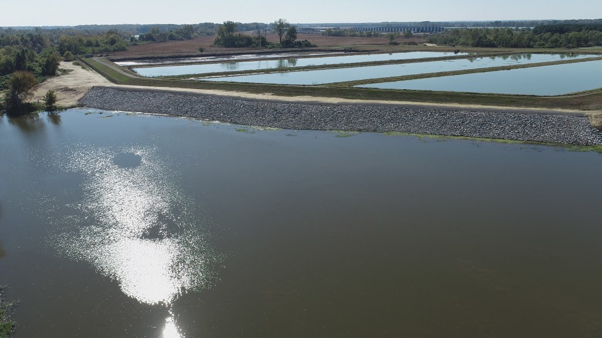

Work with Doxa
We’re actively recruiting skilled professionals to help us deliver water, wastewater, and other various construction projects throughout the state of Arkansas. As a leading general contractor, we’re proud to build the critical infrastructure our communities rely on every day, and offer a dynamic work environment where your expertise can make a genuine impact. Apply below to become part of our growing team.
We are not currently accepting new applicants. Check back soon.
See Positions